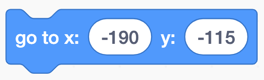

In this codelab, you'll make a maze game. The end product will look something like this:
What you'll learn
- Quick review of Scratch.
- How to incorporate micro:bits into a Scratch game!
Open the starter project and click Remix.
Before we begin, we must add the micro:bit extension so that we can incorporate the microcontroller into our project. To do this, click on the extensions block in the bottom right corner.

Once you navigate to the extension page, choose the micro:bit extension:

When trying to add this, you'll get a box that is searching for your micro:bit.

A successful search should look as shown below.

If your screen doesn't look like this/your micro:bit doesn't show up on the screen, check the following things:
- Is your micro:bit on? Check that it is either connected to your computer and/or to the battery pack.
- Is your ScratchLink activated? Scratch cannot connect if ScratchLink is not on and running.
Once you see your micro:bit on the screen, click the blue Connect button followed by the blueGo to editor button to keep working on your project. Both of them are in the lower right-hand corner of this pop-up box. This is how your screen should look before you click the "Go to editor" button.

After you add the micro:bit extension, you should see a micro:bit section in your Code list. This will show these blocks:

All of these block shapes should look familiar because they're all similar to blocks that we've worked with in the past. We can see hat blocks that trigger events, namely starting sections of code. We also see hexagonal blocks, which are used for sensing and conditional statements. Finally we see rounded blocks which can be used as variables and our typical action blocks that can be used for actions, motions, looks, and more!
Wouldn't it be awesome if we could use the micro:bit as a controller? Let's try it out. We are going to program the Coder sprite to move according to how the micro:bit moves.
Steps
- When the micro:bit is tilted right and left, make the Coder girl move inn that direction along the x (the x-axis corresponds to "right" and "left"). We recommend using some of these blocks, combined with other blocks that you've already used in the past.

- Repeat this for the vertical direction (change y). It might take some experimenting with what Scratch considers "front" and "back" tilt to be.
- The Coder might not be moving at the speed you want her to; you can change her speed by changing the amount of steps in each move. She'll move slower when there are fewer steps in the "move" block and she'll move faster when there are more steps.
Check yourself: If you run the program with the green flag, does your Coder girl move how you want her to?
Challenge: Can you change the Coder sprite to point in the direction that she's moving? Make her face right if she's moving right and make her face left if she's moving left. This will help you in a later step!
Now we will check if the superhero is touching the wall and lose the game if she is
Steps
- Have the superhero check if she's touching the black wall, and say "game over" if she is
- If the game ends, the superhero should also return to the starting position (-190, -115) so the game can restart.

- This check should happen over and over while you're playing the game (remember the forever loop!)

- She should start checking if she's touching the wall when the game begins (remember Hat blocks!)

Scratch is very sensitive to the micro:bit tilts, so it might be very difficult to make this sprite go through the maze without touching the walls. Try to think of creative solutions to make the game more do-able! It can be anything you want (even if it means replacing the step you just did with something else or making the sprite smaller).
Now we will check if the Coder girl is touching the laptop and win the game if she is

She can check if she's touching the Laptop in a similar way to how she checked if she was touching a black wall.
The Laptop is a sprite, not a color, so be sure to use the right block!
What else can you do with the micro:bit?
We hope you didn't think that the micro:bit could only be used to move the sprites! If you look at the micro:bit itself, you can see a 5x5 grid of lights and 2 buttons labeled "A" and "B." Let's make use of those!
Cleaner start
Have you tested your game yet? If you haven't, go take a look now!
Did you notice that after you pressed the green flag, your Coder girl sprite moved (almost) randomly around a little bit until you got control with the micro:bit? Instead of starting the game right when the green flag is pressed, can you make the game start only when the player presses both the "A" and "B" buttons at the same time? This will help show that the player is ready to play. Make sure to add these instructions on the screen so the player knows how to begin.
Also make sure you mention how to play the game! Here are sample instructions:
Challenge: Try to change the instructions using a Block made from MyBlock. The instructions above were made with a Block called "instructions", which took a variable called "step" to decide which text block to display. If you don't know how to use MyBlocks, ask your mentor for help!
Frank: the not-so-friendly monster
In this game, Frank is a not-so-nice monster who can make you lose the game! Right now, he doesn't move around and just blocks the maze.
- Let's make him a bit more threatening.
- Make Frank move around in the top, horizontal stretch of the maze. Try this on your own and ask your mentor if you need help!
- Now we just have a sprite moving around on the screen. Make the game end if the Coder sprite runs into Frank. Look at the "Check if She's Touching the Wall" step if you need help with this part. Challenge: Try to make this check from the perspective of Frank instead of the Coder but change the Coder's sprite as a response (think about broadcasting!).
- Optional: You can make Frank more entertaining when he moves by changing his costume!
- Make a way to get rid of the threat. If Frank is in our way and can make us restart the game, we should find a way to get rid of him. How about we use the Ball sprite to shoot and get rid of him?
- The ball should follow the Coder. Can you find any way for the ball to go to the same place as the Coder sprite? Hint: If you're stuck, maybe explore the "Motion" blocks.
- If the player presses only the "B" button, the ball should move horizontally.
- Check if the ball hit Frank - if it did, make Frank disappear and get rid of the threat! Sense Frank from the Ball sprite and broadcast if the ball hits him. Bonus: Use Frank's "boom" costume to make him blow up!
- What happens if you shoot at Frank but miss? Will you run out of balls or can you make more? Try to remember a concept we learned in CodeIt called cloning.
Barrier
There's a vertical barrier about halfway through the maze and it's in your way! Try to get rid of the barrier (for inspiration, use the instructions for getting rid of Frank!). Make sure you consider a few things:
- Which direction does the ball need to go? One of the challenges you had earlier will help you with this.
- If you used the ball to shoot Frank, how can you use the ball again?
CodeIt Heart
At this point, we've only had obstacles that make it harder for us to complete the maze, so now we have some positivity! Use the "A" button to collect the CodeIt heart. Once you collect the heart, make it disappear so you can't collect it again.
Creative opportunity: You choose what happens once the Coder gets the CodeIt Heart. What happens? Is something displayed with the lights? Does the computer move a little closer to the Coder sprite?
- Draw your own maze background! You can do this by changing the backdrop. If you want to make the superhero smaller, you can do that with a block in the Looks category
- Change the sprites for the player, home and goal of the maze
- Make something exciting happen when the game is lost or won
- Add scoring that you can display at the end of the game
- Time how long it takes for the player to make it to the laptop
- Explore the micro:bit code blocks and add a new feature to the game using them!